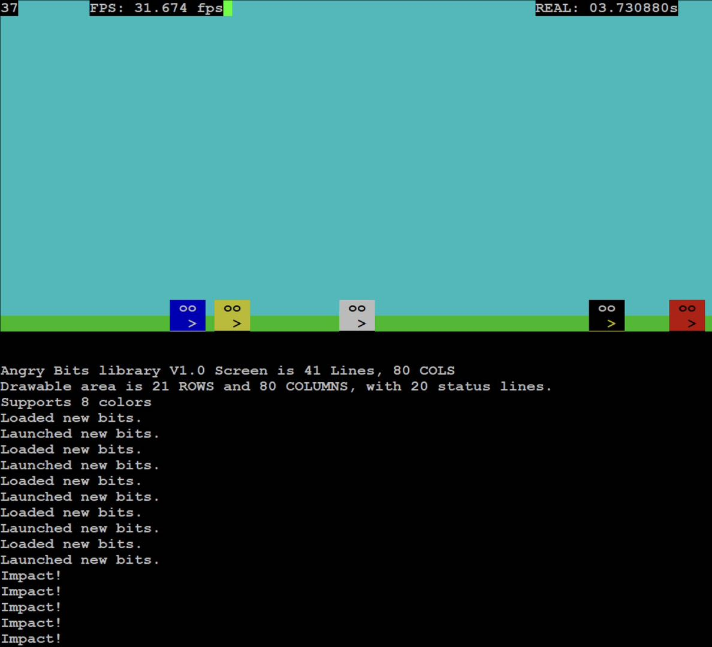
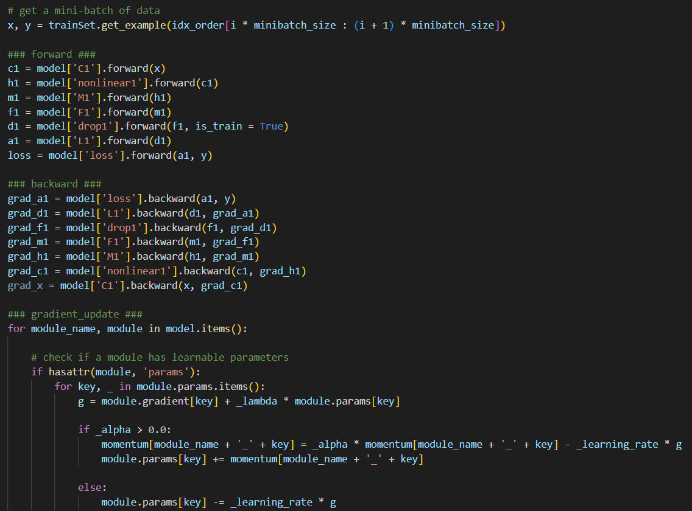

OSU Book Exchange Website
Utilized AngularJS to implement the front-end App UI design of a web app that
enables OSU students to create/review listings of textbooks and sell/exchange them.
Built RESTful APIs with Ruby on rails to to handle HTTP requests to handle HTTP requests and responses
and create CRUD operations to fetch data with queries.
Used devise to handle user authentications, and used JSON Web Token to improve security.

Angry Bird(bit) Game in C
A game that simulates the launching and adjusting process of Angry Birds of any given number of birds. User uses the
keyboard to adjust the speed and angle of the birds. Both graphics and text mode are supported.

Comprehensive Machine Learning Algorithm Implementations
Derived the mathematical foundations and executed hands-on implementations in a graduate level ml course.
Covered a range of algorithms including KNN, SVM, Linear & logistic Regression, GDA, Naive Bayes, AdaBoost,
Multilayer Perceptron (MLP) Neural Networks, and Convolutional Neural Networks (CNN).
Achieved an accuracy of over 99% using two-convolutional-layer CNN on the MNIST dataset's validation set

OSU Day Tour Best Route Planner
The algorithm is a solution to an advanced TCP problem that visits at least a user-defined number of places among the
recommended 15 places but not all of them. The result is saved in a 15*15 matrix, with 1 indicating a place is visited.
Distances between each destination were achieved using Google map API.

Java Compiler Design and Language Processing Project
Designed and implemented a scanner in Java to tokenize input streams into distinct categories.
Developed a recursive descent parser in Java, applying industry-standard practices in compiler design and syntax
analysis.

TCP List Server and Client
The user can send commands from the client side to perform CRUD operations on the groceries list and its sub lists saved in
the server’s database.
IP addresses were saved in config file, connecting and CRUD histories saved in log file. Full error checks for each request.
Job search chatbot
A chatbot that utilizes react for the frontend design and used rasa framework for training, used elasticSearch for fuzzy search